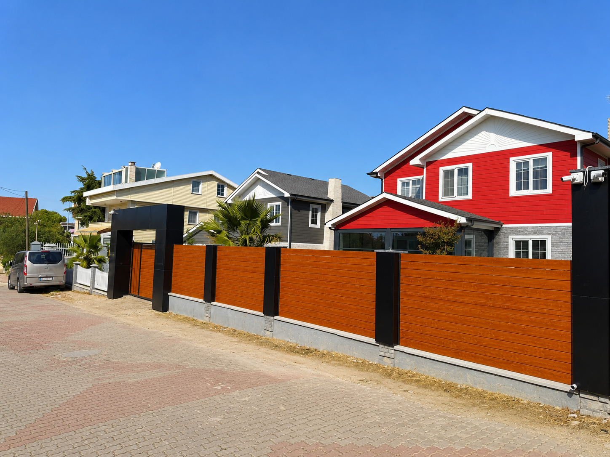
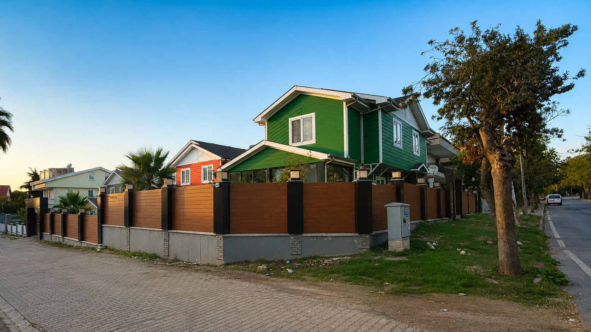

Binanızı Onlarca Yıl Koruyan, Estetiği Öne Çıkaran Alüminyum Kompozit Cephe Çözümleri.
FİYAT TEKLİFİ ALKompozit cephe kaplaması, iki ince alüminyum levha arasına sıkıştırılmış polimer çekirdeğinden oluşan, binalara modern ve uzun soluklu bir dış yüzey kazandıran özel bir panel sistemidir. Sektörün önde gelen üreticilerinin malzemeleriyle çalışan Çağdaş Pro Yapı; ofis binaları, fabrikalar, okullar, hastaneler ve konut projelerinde estetik, dayanıklı ve güvenli cephe çözümleri sunmaktadır.
İki katmanlı alüminyum yüzey ve polimer çekirdekten oluşan ACP paneller; yaklaşık 4–6 kg/m² ağırlığıyla binaya ek statik yük bindirmeden uygulanır. Yüksek dayanım, kolay işlenebilirlik ve mükemmel estetik bir arada sunar.
PVDF kaplama ile işlenmiş paneller UV ışınlarına, asit yağmurlarına ve iklim koşullarına karşı 25 yıl ve üzeri renk ve parlaklığını korur. Mat, parlak, metalik ve özel efektli seçenekler mevcuttur.
Özel alüminyum alt konstrüksiyon ve klibs sistemi ile paneller görünür vida veya perçin kullanılmadan monte edilir. Temiz ve minimalist bir cephe görünümü elde edilirken panel yenileme işlemleri de kolaylıkla yapılabilir.
Geleneksel taş ve sıva cephe sistemleriyle karşılaştırıldığında alüminyum kompozit paneller çok daha hafif, çok daha hızlı monte edilebilir ve çok daha uzun servis ömrüne sahiptir. Kaplama altına uygulanan taş yünü veya EPS yalıtım levhası ile enerji verimliliği de önemli ölçüde artırılır. Tüm bu avantajlar, kısa montaj süreci ve düşük bakım maliyetiyle birleşince kompozit cephe; hem yeni yapı hem de yenileme projelerinde en akılcı cephe çözümü haline gelir.

200'ü aşkın standart RAL ve NCS rengi ile özel sipariş renk uygulamaları mümkündür. Fırçalanmış, taş, ahşap ve tuğla imitasyonlu doku seçenekleriyle mimarinizin vizyonunu birebir hayata geçirebilirsiniz.
Alüminyum alt konstrüksiyon üzerine montaj yapılan kompozit cephe sistemleri çalışma süresini ve inşaat kirliliğini minimuma indirir. Saha kesim ve bükme işlemleri ile eğimli ve karmaşık geometrik formlara kolayca adapte olur. Komple cephe yenileme işlemleri haftalarca değil, gün bazında tamamlanır.

A2 sınıfı yanmaz panel seçeneği ile TSE ve Türkiye Bina Yangın Yönetmeliği'ne tam uyumluluk.
PVDF kaplama ile 25 yıl garantili renk ve parlaklık koruması; solma ve çatlama görülmez.
Gizli montaj sistemi panel esnekliğine izin verir, deprem hareketlerinde kırılma riski yoktur.
Alüminyum–polimer–alüminyum sandviç yapı dış kaynaklı gürültüyü önemli ölçüde azaltır.
Korozyona ve kire dayanıklı yüzeyler sayesinde 10+ yıl boyunca ek bakım gerektirmez.
-50°C ile +80°C arasında termal kararlılık; don, yağmur ve güneşe dayanıklı yapı.
Türkiye Bina Yangın Yönetmeliği'ne uygun olarak, yüksek katlı ve kamusal binalarda zorunlu tutulan A2 sınıfı alüminyum kompozit panel seçeneği sunulmaktadır. Mineral dolgu çekirdekli bu paneller 650°C'ye kadar alevlenme göstermez ve yangının bina cephesinde yayılmasını önler.
Ofis binaları, fabrikalar, hastaneler, AVM'ler ve konut projelerinde profesyonel uygulama deneyimi.
Mat, parlak, metalik, taş ve ahşap imitasyonlu yüzeylerle mimarınızın vizyonunu gerçeğe taşıyın.
Uluslararası yangın, UV ve mekanik dayanım testlerinden geçmiş, TSE belgeli kompozit panel malzemeleri.
"İş yerimizin cephesi tamamen yenilendi; hem daha modern göründü hem de binanın değeri arttı. Montaj ekibi çok hızlı ve özenli çalıştı."
"Fabrika binamızın cephesini A2 yangın sınıfı panellerle kapladık. İşçilik kalitesi ve detay hassasiyeti beklentimizin çok üzerindeydi."
"Eski sıva cephemiz çatlaklar atmıştı. Kompozit cephe ile hem güzel görüntü hem de uzun soluklu çözüm aldık."